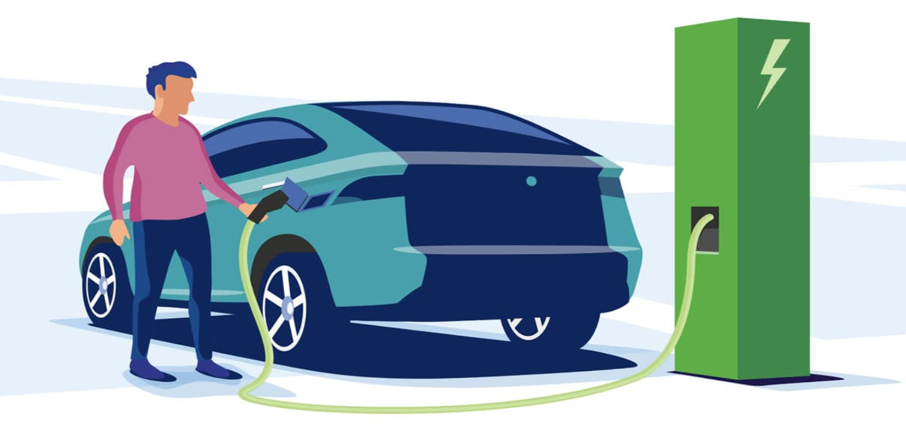

Mobilidade sustentável: o que o futuro nos reserva?
Mobilidade sustentávelMobilidade sustentável
Com o avanço das tecnologias e a preocupação crescente com o impacto ambiental, o futuro dos transportes aponta para soluções mais limpas, eficientes e acessíveis.
Esse futuro já está sendo construído com inovações como carros elétricos, energia limpa e novas formas de mobilidade urbana.
A transição para alternativas mais ecológicas não é apenas uma tendência passageira, mas uma necessidade urgente e inadiável para enfrentar os desafios impostos pelas mudanças climáticas.
Adotar soluções sustentáveis no setor de transporte é essencial para reduzir as emissões de gases de efeito estufa, preservar os recursos naturais e garantir um futuro mais saudável e equilibrado. Além disso, essas mudanças promovem uma melhoria significativa na qualidade de vida nas cidades, com menos poluição, maior eficiência no deslocamento e espaços urbanos mais habitáveis e seguros para todos. Vamos explorar como essas inovações estão moldando uma nova era da mobilidade sustentável.

Carros Elétricos: O Pilar da Mobilidade Sustentável
Os carros elétricos (EVs, na sigla em inglês) representam uma mudança fundamental na indústria automobilística. Diferente dos veículos tradicionais movidos a combustíveis fósseis, eles são alimentados por baterias recarregáveis, eliminando a emissão direta de poluentes.
Por que investir em carros elétricos?
Redução de emissões: Os EVs não liberam CO₂ ou outros gases nocivos durante o uso, contribuindo para a qualidade do ar nas cidades.
Menor custo operacional: Carregar um carro elétrico geralmente é mais barato do que abastecer com gasolina ou diesel, além de exigir menos manutenção, já que possuem menos peças móveis.
Incentivos governamentais: Muitos países oferecem benefícios, como isenção de impostos e subsídios, para incentivar a compra de veículos elétricos.
Conhecer seu impacto é o primeiro passo para transformá-lo.
Desafios:
Embora os EVs sejam uma solução promissora, ainda enfrentam desafios como a autonomia limitada, o custo inicial elevado e a necessidade de expandir a infraestrutura de recarga. Felizmente, avanços tecnológicos estão tornando esses obstáculos cada vez menores.
Outras Soluções de Transporte Sustentável
- Bicicletas e Patinetes Elétricos
>As micromobilidades estão ganhando espaço como alternativas rápidas e ecológicas para trajetos curtos. As bicicletas e patinetes compartilhados já são realidade em muitas cidades e ajudam a reduzir o tráfego e a poluição.
- Transporte Público Eletrificado
Ônibus elétricos e trens movidos a energia limpa estão substituindo os modelos a diesel em diversas metrópoles. Esses sistemas oferecem transporte eficiente para milhares de pessoas ao mesmo tempo, com um impacto ambiental muito menor.
- Carros Autônomos e Compartilhamento de Veículos
O futuro dos transportes não está apenas na eletrificação, mas também no compartilhamento e na automação. Aplicativos de carona compartilhada e carros autônomos prometem diminuir a necessidade de veículos particulares, otimizando o uso dos recursos.
- Hidrogênio como Combustível
Os veículos movidos a células de hidrogênio estão começando a ganhar popularidade. Eles combinam a eficiência dos elétricos com maior autonomia, sendo uma alternativa interessante para veículos de longo alcance.
Os Benefícios de Adotar o Transporte Sustentável
- Redução do impacto ambiental: Menos poluição e emissões de carbono.
- Melhoria na saúde pública: Ar mais limpo nas cidades diminui doenças respiratórias.
- Economia: Uso eficiente de recursos reduz custos no longo prazo.
- Preservação de recursos naturais: Transporte sustentável diminui a dependência de combustíveis fósseis.
O futuro dos transportes é sustentável, e as tecnologias que estão emergindo hoje são a base para um mundo mais limpo e eficiente. Seja adotando um carro elétrico, utilizando transporte coletivo ou optando por meios alternativos como bicicletas, cada escolha faz a diferença. 🌱